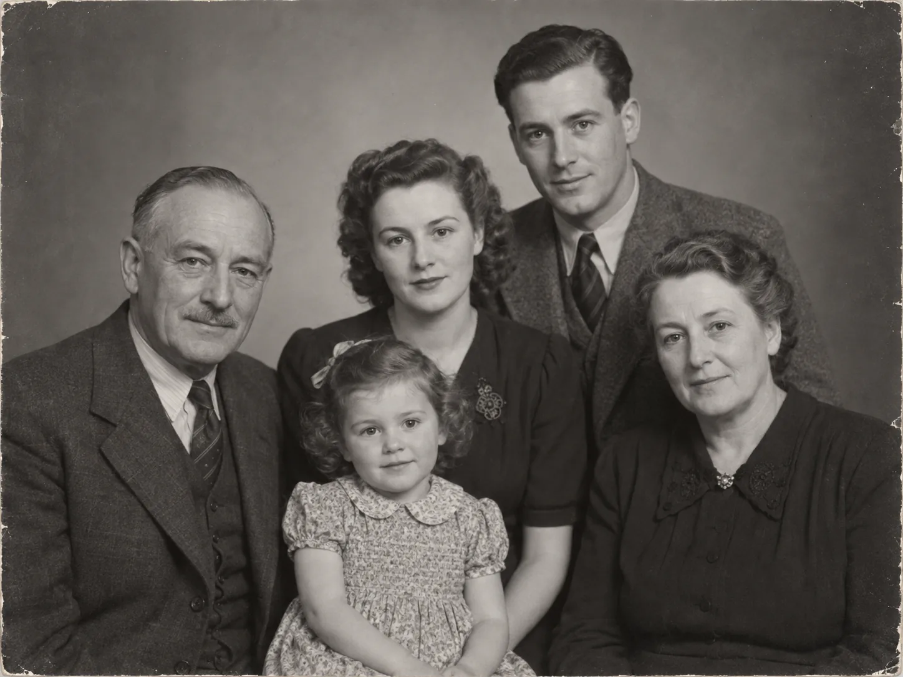

ArchiveFiles & sources
All filesFamily recordsBirth records
FAMILY RECORDS / BIRTH RECORDS
Clara Carter birth record
1941 · York · linked to Clara Carter
A document has a home in Archive and stays findable from Clara’s profile.
GeneoGraph brings your family tree, people, photos, documents, notes, places and visual research into one connected workspace—so you spend less time managing separate tools and more time understanding your family history.
See the family structure at a glance, then open a person for dates, relationships and the research behind their story. More detail doesn’t have to mean a more crowded tree.
1941–2010 · born in York
Keep records in Archive, photographs in Albums and working thoughts in Notes—without forcing everything into the family tree.
1941 · York · linked to Clara Carter
A document has a home in Archive and stays findable from Clara’s profile.

Linked to Clara, Helen and Samuel
Clara’s birth record places the family in York in 1941. Check the address against the next household register.
Illustrative content based on the prototype’s actual module structure; not a screenshot.
Clara has one place in the family, while the material about her can live where it makes sense. Start at the tree, a file, a photograph or a note and find the context again.
One record many views
Different homes for different material. The person remains the thread between them.
Geneograph is the flexible board inside the same project. Reuse linked people and photos to present a family story, or keep a possible relationship visible while you investigate it.
Father’s name may read “Walter”; transcription needs checking.
Compare Walter’s 1911 address before accepting the link.
Linked project people and photos can be reused on a board. A board-local hypothesis is kept visibly separate from a confirmed Family Tree relationship.
Keep the family structure clear.
Give every part of the research a home.
Keep context attached to what it belongs to.
See and present the family your way.
GeneoGraph’s direction is local projects and portable data, with optional online services later—not a requirement to hand over your research.
Open the prepared prototype project and follow the research from family structure to connected material and a custom Geneograph view.
Open the DemoGeneoGraph is still in development. If you research family history and want to help refine the workspace, get in touch.
Opens your email app; nothing is submitted on this site.
GeneoGraph grew from hands-on family-history work and the challenge of keeping people, records, notes and unresolved questions connected.